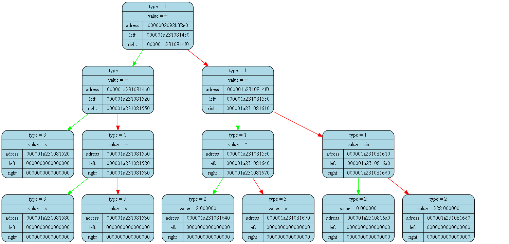

<pre>
<pre>

Tree dump from (int main()) at (main.cpp) at line (15):
tree [0000002092bff8b0] "&func_tree" at (int main()) at (main.cpp)(12):
{
	status   = 1
	error    = 0
	size     = 13

	(((x)+((x)+(x)))+(((2.000000)*(x))+((0.000000)sin(228.000000))))
}
<pre>

Tree dump from (int main()) at (main.cpp) at line (21):
tree [0000002092bff860] "&der_tree" at (int main()) at (main.cpp)(18):
{
	status   = 1
	error    = 0
	size     = 1

	(5.000000)
}
